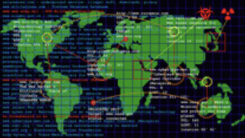

[sign69]

[Paper Rad]

[TUMBLR]

[Rhizome ArtBase]
[Powel Janicki]
| Web Artist | Characteristics | Thumbnail Image |
|---|---|---|
| philip wood | uncanny, juxtaposing images, insightful [sign69] | [sign69] |
| Paper Rad | colorful, fever dream, dynamic, information dense [Paper Rad] | [Paper Rad] |
| Jack Madden | whimsical, humorous, lighthearted, direct [TUMBLR] | [TUMBLR] |
| Entropy8Zuper! (Auriea Harvey, Michaël Samyn) | time capsule, interactive, nostalgic [Rhizome Emmulator] | [Rhizome ArtBase] |
| Marta Klonowska | informative, technological, scientific [Powel Janicki] |  [Powel Janicki] |